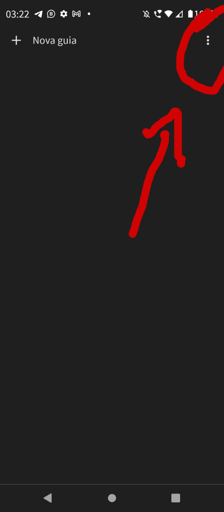
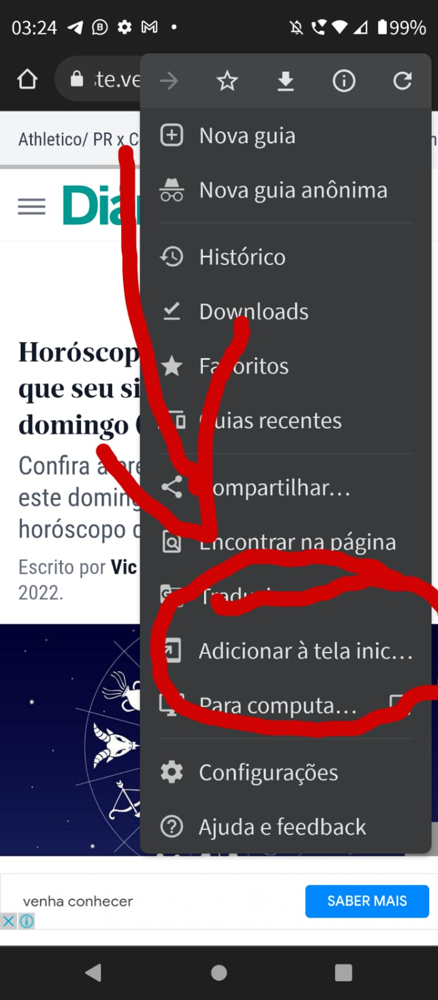
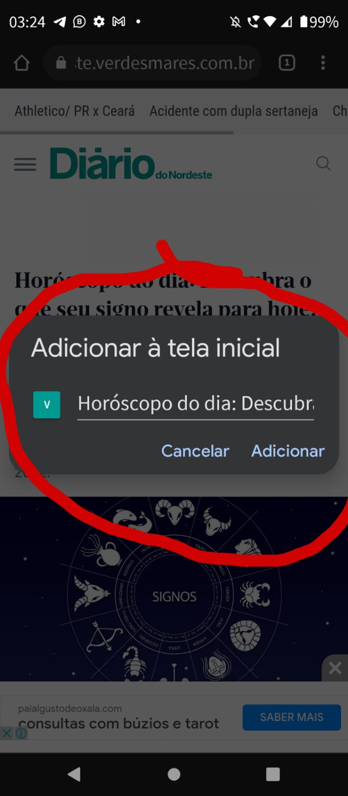
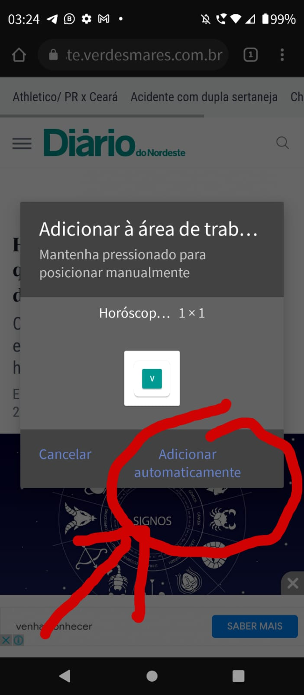
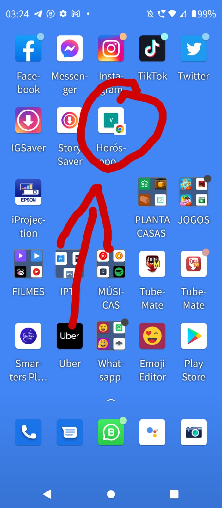

"BEM VINDOS"
COMO ADICIONAR O SITE NA TELA INICIAL DO CELULAR
(01)-Primeiro vc abre o site no navegador "google" e toca nos "tres pontinhos" superior direito
(02)-Depois clique em "Adiccionar a tele inicial"
(03)-Depoise em "Adicionar"
(04)-Depois em "Aicionar automaticamente"
(05)-e pronto aparecerá na tela inicial
01-

02-

03

04-

05-

😈😇filmessantos😇😈